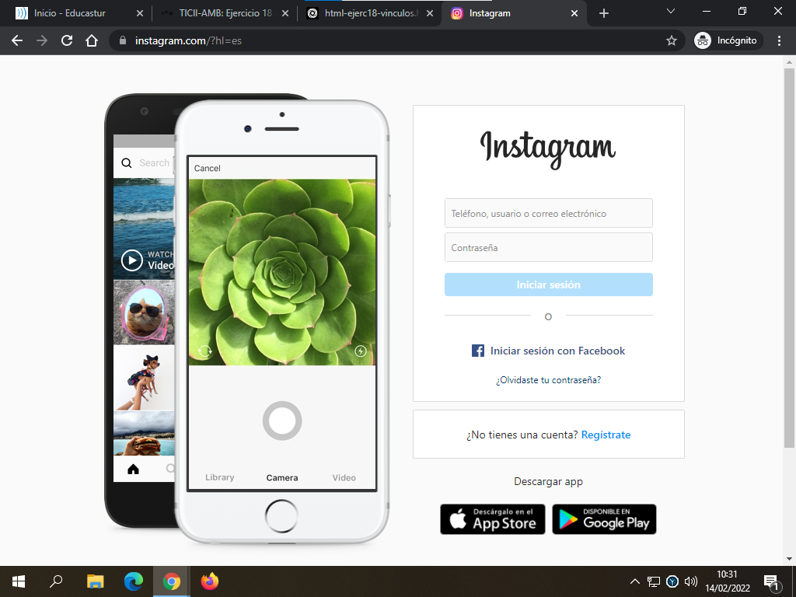
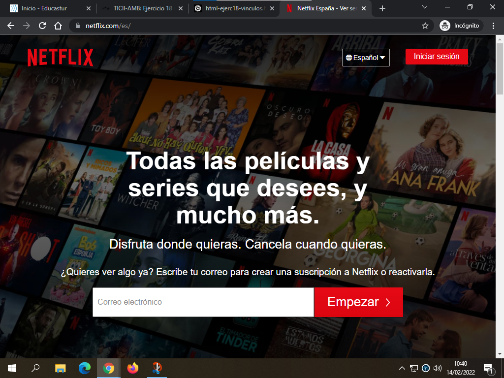
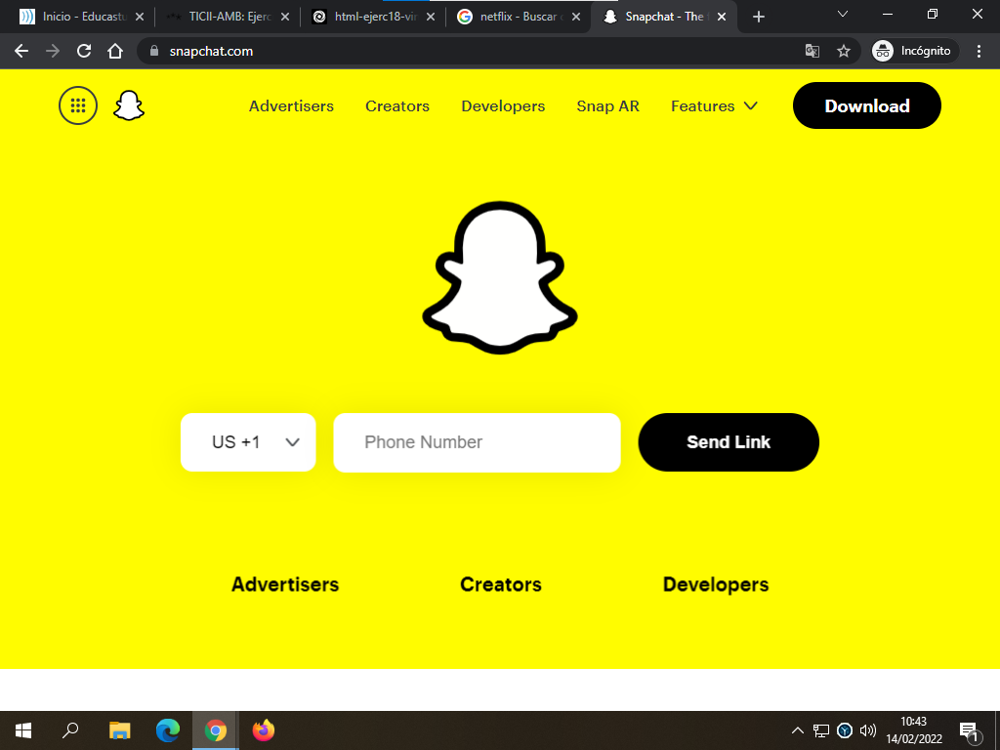

Instagram es una aplicación y red social de origen estadounidense, propiedad de Meta. Creada por Kevin Systrom y Mike Krieger, fue lanzada el 6 de octubre de 2010. Ganó rápidamente popularidad, llegando a tener más de 100 millones de usuarios activos en abril de 2012 y más de 300 millones en diciembre de 2014
Spotify es una empresa de servicios multimedia sueca fundada en 2006, cuyo producto es la aplicación homónima empleada para la reproducción de música vía streaming
Netflix, Inc. es una empresa de entretenimiento y una plataforma de streaming estadounidense. Ubicada en Los Gatos, la compañía fue creada en 1997 y un año después comenzó su actividad, ofreciendo un servicio de alquiler de DVD a través del correo postal.
Snapchat es una aplicación de mensajería para teléfonos inteligentes con soporte multimedia de imagen, vídeo y filtros para fotos de realidad aumentada.
